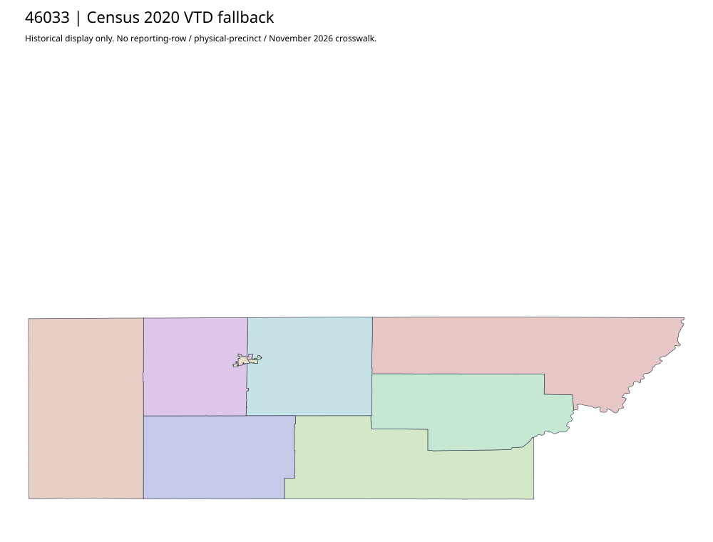

304 ordered indexCuster | 46033
Official voter-information parent links two complete county/city voting-precinct PDFs with2026 source filenames. Physical maps preserve separate county and municipal scope; filename/year is not November approval or proof of unchanged2024 identifiers. GIS parent is separate.
5 priority / 10 full historical observations. Parent is a summary ancestor, not additive to leaves. No physical feature matches or current reporting crosswalk approved.
Acquired shared-parent assets
map-46033-c422daa756e3 | complete1-page PDF; all-page contact sheet; complete page1; complete original gzip. Exact reconstruction: python -B scripts/reconstruct.py --id map-46033-c422daa756e3 /private/tmp/map.pdf
map-46033-01fa20e0657e | complete1-page PDF; all-page contact sheet; complete page1; complete original gzip. Exact reconstruction: python -B scripts/reconstruct.py --id map-46033-01fa20e0657e /private/tmp/map.pdf
Census2020 fallback
11 native historical VTD features. Entire785-feature ZIP original retained once, all66 counties. Yankton has one countywide VTD. No current/reporting allocation. complete original gzip

Full binary/attribute/geometry QA
Observed authority/acquisition routes
Complete SOS authority fields including original blank/masked values: parent inventory. No contacts were sent.
Ordered full children
- Precinct-09 | 1496 source votes | priority
- Precinct-01 | 1263 source votes | priority
- Precinct-05 | 782 source votes | priority
- Precinct-04 | 628 source votes | priority
- Precinct-08 | 497 source votes | priority
- Precinct-06 | 433 source votes | remainder
- Precinct-07 | 280 source votes | remainder
- Precinct-03 | 219 source votes | remainder
- Precinct-10 | 214 source votes | remainder
- Precinct-02 | 184 source votes | remainder